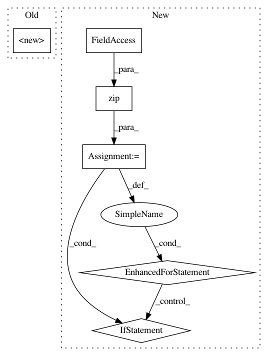

3a181c8d229d3f45d6457cd329d2336b07b2330b,autokeras/pretrained/voice_generator/voice_generator.py,VoiceGenerator,__init__,#VoiceGenerator#Any#Any#,244
Before Change
class VoiceGenerator(Pretrained):
def __init__(self, model_path=None, overwrite=False):
super(VoiceGenerator, self).__init__()
self.model_path = model_path if model_path is not None else temp_path_generator()
ensure_dir(self.model_path)
self.checkpoint_path = os.path.join(self.model_path, Constant.PRE_TRAIN_VOICE_GENERATOR_MODEL_NAME)
self.sample_rate = 0
After Change
// [en jp]
frontend = "en"
// Replace words to its pronunciation with fixed probability.
// e.g. "hello" to "HH AH0 L OW1"
// [en jp]
// en: Word -> pronunciation using CMUDict
// jp: Word -> pronounciation usnig MeCab
// [0 ~ 1.0]: 0 means no replacement happens.
replace_pronunciation_prob = 0.5
// Convenient model builder
// Definitions can be found at deepvoice3_pytorch/builder.py
// deepvoice3: DeepVoice3 https://arxiv.org/abs/1710.07654
builder = "deepvoice3"
In pattern: SUPERPATTERN
Frequency: 3
Non-data size: 6
Instances
Project Name: jhfjhfj1/autokeras
Commit Name: 3a181c8d229d3f45d6457cd329d2336b07b2330b
Time: 2019-02-08
Author: jhfjhfj1@gmail.com
File Name: autokeras/pretrained/voice_generator/voice_generator.py
Class Name: VoiceGenerator
Method Name: __init__
Project Name: deepgram/kur
Commit Name: f9e27737834aa42092518755743a26a4785e198c
Time: 2017-01-31
Author: ajsyp@syptech.net
File Name: kur/providers/batch_provider.py
Class Name: BatchProvider
Method Name: __iter__